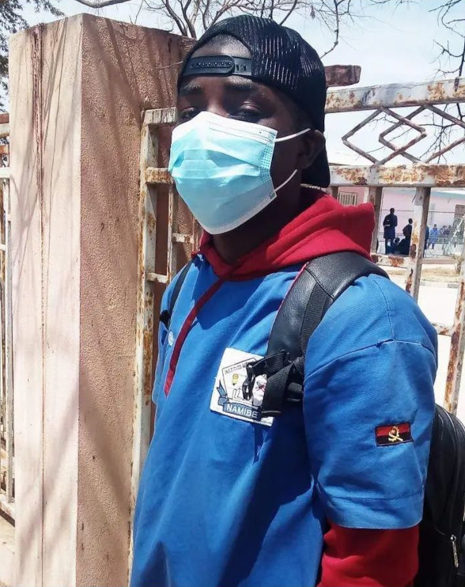

Surgimento
A SSL é uma empresa fundada em 2023 por três Desenvolvedores de categoria Front-End, está localizada na província do Namibe no município de Moçâmedes. Tudo começou pela paixão de aprender a programar, com isso eles decidiram focar parte dos seus tempos no aprendizado de programação, passaram-se vários meses de estudos até que os Desenvolvedores chegaram a uma ideia de fundar uma pequena empresa com criação de um site em que eles colocarão todos os seus conhecimentos nele.
E com isso, foi fundada a SSL e a criação do site para a empresa com objetivo de publicar várias músicas encontradas na província do Namibe, com o tempo terá o objetivo de publicar várias músicas a nível nacional e mundial.
Na tabela abaixo estão os responsáveis pela fundação desta empresa, para mais informações de cada um dos fundadores, role até ao final da página.
| Nome | Idade |
|---|---|
| Felismino Chico | 18 |
| Máquina Bumba | 19 |
| Odes de Deus | 19 |
Evolução
Hoje a SSL conta apenas com os 3 Desenvolvedores e fundadores da empresa que estão trabalhando arduamente na transformação do Site estático para o dinámico, para que as suas funções possam verdadeiramente funcionar de acordo com a previsão da empresa.
Certamente, o Site encontra-se em movimento, portanto, nós os Desenvolvedores não temos a data certa para o funcionamento completo do Site. Mas está provável o seu funcionamento completo no início do ano de 2024.
Com a evolução dos conhecimentos dos Desenvolvedores, a empresa visa resolver o problema encontrado na Província, logo, a empresa trará soluções com objetivo de eliminar o problema de campo inicialmente na Província.
Imagens dos Desenvolvedores
Temos aqui as imagens dos fundadores da SSL, portanto, podem conhecer os responsáveis pela fundação da empresa.
Na imagem acima estão os Desenvolvedores Máquina Bumba e o Odes de Deus. Para mais informações acerca dos Desenvolvedores acima, clique nos seus nomes que têm o símbolo de âncora e acessarás os seus perfis do Facebook.
Na imagem acima está o Desenvolvedor Felismino Chico, ele não possui uma conta no Facebook. Para mais informações acerca do Desenvolvedor acima, clique no seu nome que tem o símbolo de âncora e acessarás a sua conta do GitHub. Por questões de gosto, eu prefiro por enquanto colocar fotos com máscaras!😅
, assim diz o Desenvolvedor Felismino Chico.